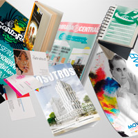
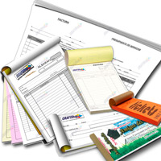
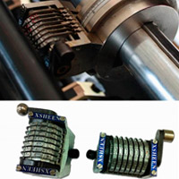

OFFSET
La impresión offset1 u ófset23 (del inglés: offset printing) es un método de impresión (reproducción de documentos e imágenes sobre distintos soportes), que consiste en aplicar una tinta, generalmente oleosa, sobre una plancha metálica, compuesta generalmente de una aleación de aluminio. Constituye un proceso similar al de la litografía.
El desarrollo de la imprenta ófset se dio a través de dos inventores, en distintos lugares del mundo: En 1875, por el inglés Robert Barclay, quien desarrolló una versión para impresión en metales (estaño), en 1903 por el estadounidense Ira Washington Rubel, para la impresión sobre papel.
El principio de funcionamiento es similar al de la litografía: La plancha se moja con agua o una solución polar para que repela la tinta en las zonas de no imagen (zona hidrófila), para que el resto de la plancha tome la tinta en las zonas donde hay un compuesto hidrófobo o apolar (también conocido como oleófilo) con la forma del motivo a imprimir previamente grabado en la plancha, sea por métodos manuales o por fotograbado; la diferencia con la litografía tradicional es que la imagen o el texto se trasfieren a la superficie a imprimir no de forma directa, sino a través un cilindro cubierto en su superficie por un material flexible (mantilla), generalmente caucho o silicona, que recibe la imagen para transferirla, por presión, a la superficie impresa, generalmente papel.
Es precisamente esta característica la que confiere una calidad excepcional a este tipo de impresión, puesto que el recubrimiento de caucho del rodillo de impresión es capaz de impregnar, con la tinta que lleva adherida, superficies con texturas irregulares o rugosas. Todo esto debido a las propiedades elásticas del caucho, que no presentan los rodillos metálicos.
Caracteristicas
El método de impresión ófset es uno de los sistemas indirectos de impresión, ya que el sustrato (generalmente papel) no tiene contacto con la plancha matriz para traspasar la imagen. La tinta pasa de la placa de aluminio al cilindro portacaucho o mantilla para después pasar al papel (u otro sustrato), ejerciendo presión entre el cilindro portacaucho y el cilindro de presión.
La impresión ófset se realiza mediante planchas monocromáticas, de modo que debe crearse una plancha por cada color a imprimir; en el caso de la fotocromía, por cada uno de los cuatro colores del modelo de color CMYK (cian, magenta, amarillo y negro), a lo que también se le conoce como impresión en cuatricromía; además, interviene en el proceso un quinto color: el blanco del papel. Utilizando cantidades diferentes de esos cinco colores, pueden reproducirse casi cualquier color alcanzable a través del modelo sustractivo de color, con la excepción de colores «metálicos» como el dorado y el plateado, y colores fosforescentes o que estén fuera del rango del modelo CMYK los cuales, en caso de ser necesitados, pueden ser aplicados con tintas de estos colores directamente utilizando planchas adicionales, mediante el método conocido como tintas planas.
Todas las fotografías (en color o en escala de grises) pueden reproducirse litográficamente mediante la utilización del proceso de difusión por semitonos. Actualmente se digitaliza la película fotográfica (mediante un escáner de alta resolución), o se obtiene la imagen mediante fotografía digital, y en el proceso de preprensa se le somete a un proceso de separación de colores, que crea una imagen distinta representativa de cada canal de color.
A partir de la imagen separada se crea un fotolito, el cual se proyecta con luz ultravioleta sobre una emulsión sensible lipofílica esparcida sobre un sustrato metálico, generalmente de aluminio anodizado o monometálico u otras aleaciones, que luego se revela; otro método de creación de la plancha es la impresión sobre una plancha plástica mediante impresora láser (el tóner actúa como sustrato lipofílico), o la transferencia directa de la imagen digital a través de un láser, mediante un dispositivo conocido como Computer to Plate, también conocido por sus siglas, CTP. Cada una de las retículas de semitono se imprime en un ángulo distinto, para evitar al máximo la superposición entre los puntos; sin embargo, las tintas utilizadas tienen un nivel razonable de transparencia, para corregir las imperfecciones de la mezcla por semitonos de tal forma que durante la observación normal se produzca la ilusión de mezcla entre las cuatro tintas separadas.
Nuestros Servicios

Formatos de Impresión

Comprobantes de Pago

Numerado de Hojas
TRABAJO FINAL
Libros
Imprimir libros es nuestra gran pasión, llevamos muchos años imprimiendo libros para instituciones públicas y privadas, editoriales y también para particulares. Nuestro objetivo empresarial es que cualquier persona que desee tener un libro bien impreso y a un precio asequible, pueda contar con nosotros. Las modernas tecnologías de impresión digital nos permiten hoy en día hacer tiradas cortas de libros con el mismo cariño y esmero que ponemos en las ediciones largas, pero reduciendo costes, preocupaciones de almacenaje, tiempos de entrega, etc. Se trata de un sistema que permite realizar también ediciones piloto para ver la aceptación de un título en el mercado o atender a sectores con poco volumen de ventas.
Revistas
La impresión de catálogos y revistas es otra de nuestras grandes especialidades. Muchas empresas que recurren a la impresión de sus catálogos para asistir a ferias y eventos a promocionar sus productos. En KyR Impresiones estamos acostumbrados a trabajar con ellas, cumpliendo con sus exigencias de calidad y plazos de entrega.
Excelencia, capacidad de escucha y profesionalidad son los valores que han hecho de La Imprenta CG una de las empresas valencianas más reconocidas en el sector gráfico.
Folletos, Flyers
La impresión de flyers, folletos, carteles y desplegables es una opción muy económica para dar a conocer los servicios o productos de una empresa. En La Imprenta CG tenemos una amplia experiencia en la impresión de estos productos y estamos a tu disposición para asesorarte en la elección del papel, en las forma de plegado y en todos los detalles necesarios para que tu producto alcance su objetivo comunicativos.
Los procesos de impresión, manipulación, corte, doblado, grapado, encolado, etc, se efectúan íntegramente en nuestra imprenta, lo que redunda en unos precios más competitivos y en una mayor rapidez en los tiempos de fabricación y entrega.
Tarjetas, Calendarios
También podemos imprimir tarjetas de visita, postales, calendarios, agendas, libretas, carpetas, material de oficina y lo que necesites para tu empresa o a nivel particular. Para imprimir los productos que ofrecemos en nuestra tienda online, utilizamos materiales de máxima calidad. Cuidamos mucho los acabados para que tus productos transmitan la imagen y el prestigio que mereces.
Unas bonitas tarjetas de visita, unas agendas personalizadas o unas carpetas de empresa necesitan de una buena impresión para captar la atención y confianza de tus clientes. En La Imprenta CG aconsejamos en la elección de los papeles y en los acabados para sacarle el máximo rendimiento a tus productos comunicativos.